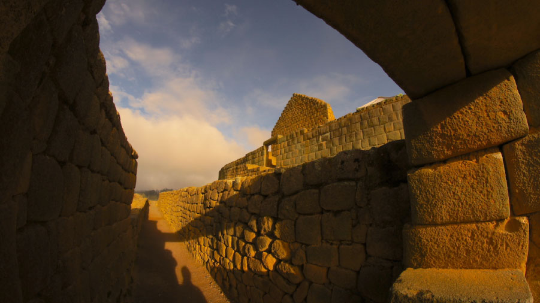

Tu opinión nos ayuda a mejorar la experiencia de los visitantes y a cuidar este patrimonio.
1. Nombre (opcional):
2. Correo electrónico (opcional):
3. Edad (*):
4. Lugar de procedencia (*): -- Seleccione una opción -- Provincia del Cañar Provincia del Azuay Otra provincia del Ecuador Otro país de Sudamérica Norteamérica Europa Otro continente
5. Fecha de su visita (*):
6. ¿Con quién realizó la visita? (*) Solo/a En pareja En familia Con amigos Grupo escolar, universitario o institucional Tour organizado por una agencia
7. ¿Qué sitios y atractivos visitó durante su recorrido? (puede marcar varios) Templo del Sol (Castillo) Museo de sitio Ñan (Camino del Inca) Cara del Inca Intihuaycu Pilaloma Tienda de artesanías
8. ¿Es la primera vez que visita Ingapirca? (*) Sí, es mi primera visita No, ya lo había visitado antes
9. ¿Cómo se enteró de la existencia del complejo? (puede marcar varios) Redes sociales Recomendación de familiares o amigos Agencia de viajes Páginas web o buscadores Institución educativa Otro
10. ¿Cómo califica la atención recibida por el personal del complejo? (*) Excelente Muy buena Buena Regular Mala
11. ¿Recibió el servicio de guía turístico? (*) Sí No
12. Si recibió guía, ¿qué tan clara y completa fue la explicación? -- Seleccione una opción -- Muy clara y completa Clara Aceptable Confusa o incompleta No aplica
13. Del 1 (muy mala) al 10 (excelente), ¿cómo califica la limpieza y el mantenimiento del complejo? 1 10
14. ¿Qué aspectos considera que se deben mejorar? (puede marcar varios) Señalización y orientación Servicios higiénicos Parqueadero Servicio de alimentación Información sobre la historia del sitio Accesibilidad para personas con movilidad reducida Seguridad Ninguno, todo me pareció adecuado
15. Considerando lo que recibió, el costo de la entrada le pareció: (*) Alto Justo Bajo
16. En general, ¿qué tan satisfecho/a quedó con su visita? (*) Muy satisfecho/a Satisfecho/a Neutral Insatisfecho/a Muy insatisfecho/a
17. ¿Recomendaría el Complejo Arqueológico Ingapirca a otras personas? (*) Sí, definitivamente Tal vez No
18. ¿Qué fue lo que más le gustó de su visita?
19. Escriba sus sugerencias o comentarios para mejorar el complejo:
Acepto que mis respuestas sean usadas con fines de mejora del servicio turístico (*)
¡Muchas gracias por su tiempo y por visitar el Complejo Arqueológico Ingapirca!